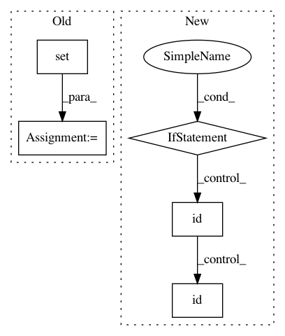

555ca942df407b8c1bf1d48383c60fa1bf09cc1d,keras/engine/network.py,Network,losses,#Network#,417
Before Change
// Add any potential unconditional model-level loss.
losses += self.get_losses_for(None)
unique_tensors = list(
set(x for x in losses if not isinstance(x, (float, int))))
non_tensors = [x for x in losses if isinstance(x, (float, int))]
return unique_tensors + non_tensors
@property
After Change
unique_tensors = []
unique_tensors_ids = set()
for x in losses:
if not isinstance(x, (float, int)):
if id(x) not in unique_tensors_ids:
unique_tensors.append(x)
unique_tensors_ids.add(id(x))
non_tensors = [x for x in losses if isinstance(x, (float, int))]
return unique_tensors + non_tensors
@property
In pattern: SUPERPATTERN
Frequency: 3
Non-data size: 5
Instances
Project Name: keras-team/keras
Commit Name: 555ca942df407b8c1bf1d48383c60fa1bf09cc1d
Time: 2019-08-28
Author: francois.chollet@gmail.com
File Name: keras/engine/network.py
Class Name: Network
Method Name: losses
Project Name: pytorch/fairseq
Commit Name: d369c8801913a0f88cfcc9b78db3410d24285c37
Time: 2020-04-06
Author: chenliu8@fb.com
File Name: fairseq/models/fairseq_incremental_decoder.py
Class Name: FairseqIncrementalDecoder
Method Name: reorder_incremental_state
Project Name: pytorch/fairseq
Commit Name: d37529ed234ea9173ed35f6797a51a85378ecfca
Time: 2020-04-07
Author: chenliu8@fb.com
File Name: fairseq/models/fairseq_incremental_decoder.py
Class Name: FairseqIncrementalDecoder
Method Name: reorder_incremental_state